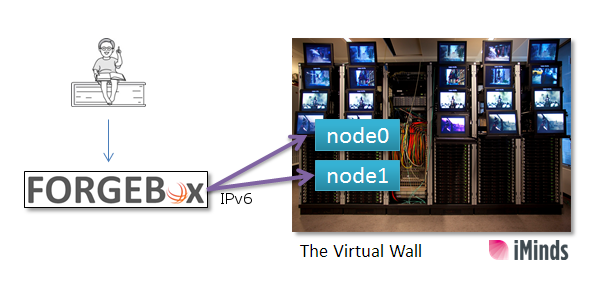
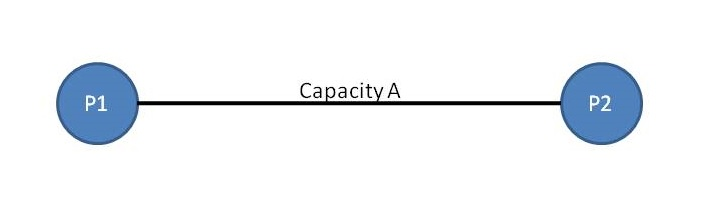

Part2: TCP Congestion Control
Task 1: Hands on access to Virtual Wall
Introduction
The second part of the TCP congestion control exercise provides a complete set of tools and infrastructure for conducting a series of experiments relative to TCP and UDP.
In this part you will have the ability to run and, on-the-fly, manage various tests in a real remote testbed with reserved hosts and network resources.
On this environment you will be asked to perform 6 tests that examine various aspects of the TCP congestion control.
For each test you will have to complete a specific number of steps, collect the required information and create the appropriate report (e.g. a graphical representation of the results).
Theoretical
Please see part 1 of TCP Congestion Control course series
This page connects you to the iMinds Virtual wall. Check the side image on how you are connected to the Virtual Wall.
We are connected over IPv6 to the iMinds Virtual wall. You are not required to do so when accessing this page.
The Virtual Wall is hosted at and operated by iMinds iLab.t.
The hardware which is visible through the Aggregate Manager consists of 110x dual CPU nodes (2x 6 cores), 24 GB RAM, 1x harddisk 250GB, Intel Xeon E5645 (2.40GHz),
interconnected with a Force 10 C300 switch (multiple gigabit interfaces per node).

Learning outcomes
This part uses a simple TCP congestion control exercise to train you on how you can run tasks on testbeds with real hardware resources.
Learning activities
During this simple task a TCP client (node0) connects to a TCP server (node1) and transmits data for 30 seconds.
During this connection, in the client node, various TCP parameters are recorded in a file called “tcpout“

Connect to the server machine
Just follow these steps to connect and manage node1:
-
Connect to server(node1) using the window on the side, with provided credentials.
-
As soon as you are successfully connected, run the following scripts (located in the login directory).
./install_tools
./run_server
-
Go to the next section and start the client machine.
-
After the completion of the task and collection of your output, stop the server.
Ctrl^C
- Exit the experiment machine. Type:
exit
Connect to client machine
Just follow these steps to connect to the client machine:
-
Connect to client(node0) using the window on the side, with provided credentials.
-
As soon as you are successfully connected, run the following scripts (located in the login directory).
./install_tools
./start_monitor
./run_client
- After the completion of the demo a new file will exist in the same directory called “tcpout”.
This file contains various TCP congestion control parameters that were recorded during this demo connection
-
Wait for the client to finish after 30 seconds.
- Open the file and examine the TCP parameters
nano tcpout
- Exit the experiment machine. Type:
exit
Summary
Further reading
Glossary